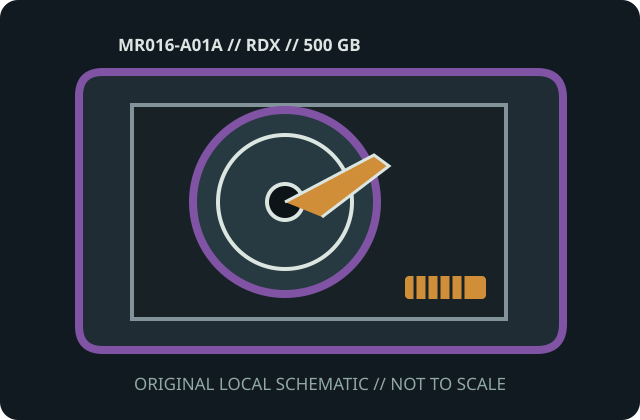

[ MODEL-SPECIFIC MEDIA // PRODUCT RECORD ]
Quantum RDX 500 GB Removable Disk Cartridge (MR016-A01A)
This entry identifies the removable medium SKU, not its drive or dock. Confirm the exact model label, medium generation, host format and drive/dock compatibility before use.

IDENTIFICATION: Quantum manufacturer SKU MR016-A01A; Quantum RDX 500 GB magnetic removable-disk cartridge. Native capacity is distinguished from any data-dependent compression estimate.
Capacity, physical format and compatibility
| Manufacturer / SKU | Quantum MR016-A01A |
|---|---|
| Medium / generation | Quantum RDX 500 GB magnetic removable-disk cartridge; Quantum RDX 500 GB generation; a 2.5-inch magnetic hard disk is protected in a removable RDX housing. |
| Native capacity | 500 GB nominal native disk capacity; formatted capacity varies by OS and filesystem. |
| Drive/dock compatibility | Quantum RDX dock and compatible third-party RDX docks that list the 500 GB cartridge; confirm OS utilities and firmware support before migration. For a Quantum or standards-compatible RDX dock rated for 500 GB and supported by the host OS. Cross-vendor RDX dock support is a format-family property; check model-specific firmware and eject software. |
| Physical medium | Sealed cartridge with internal 2.5-inch hard disk, protective rugged shell and keyed dock connector; the internal disk is not intended for direct handling. |
| Electrical interface | Internal SATA-class disk mates with contacts inside an RDX dock; cartridge has no direct host USB port or independent supply. The dock supplies power and bridges the disk to USB/SATA host connection. |
| Format limits | Random-access disk cartridge—not tape and not a bare removable SATA drive. Nominal capacity is not formatted-space guarantee; dock, filesystem, partition style and host drivers limit use. |
Storage and preservation cautions
Avoid dropping, shocks, liquids, dust, heat, magnetic sources and vibration while the disk is spinning. Use safe eject, verify all data with checksums, maintain separate backups and retain a working RDX dock for future access.
- Do not force media into a drive/dock or use improvised cleaners, lubricants or repairs. Stop if the shell, connector, tape leader or disk enclosure is damaged.
- Preserve more than one independent copy, verify checksums after transfer, and document the drive/dock, firmware, OS and format used. Plan migration before compatible equipment is lost.
Manufacturer and archival sources
- Quantum RDX technical datasheet (archival copy)Archival copy of Quantum’s manufacturer specifications for RDX removable cartridges and docks.
- HPE — RDX Removable Disk Cartridge QuickSpecsSecond manufacturer’s RDX compatibility/capacity documentation.
- Library of Congress — Care, Handling, and Storage of Audiovisual MaterialsArchival handling reference; disk shock precautions remain essential.
Capacity labels, compressed ratings, and compatibility are model- and host-specific. Product references and exact drive/dock manuals take precedence over shell fit or a generic family name.